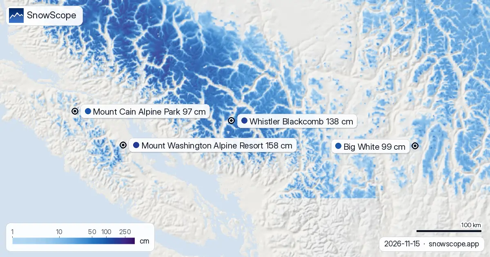
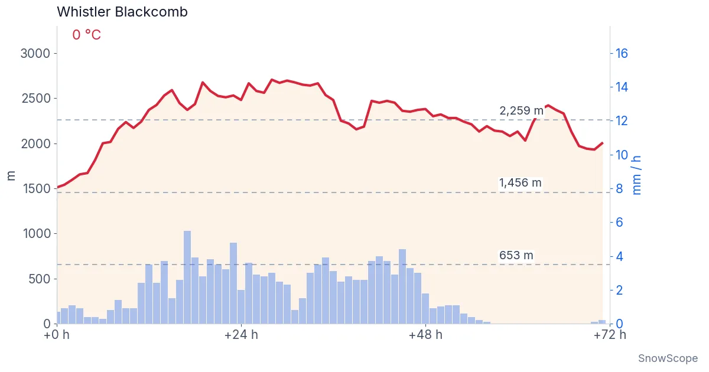

Der beste Schnee in Westkanada im Vergleich: Whistler Blackcomb, Mount Cain Alpine Park und Mount Washington Alpine Resort (15. November)
Schneefläche: 258.160 km² am 13. November, heute 253.880 km², 298.900 km² erwartet für den 18. November. Die Karte wird weniger weiß. Drei Zutaten, eine Auswahl: Heutige Schneehöhe, Neuschnee der letzten 72 Stunden und Prognose zeigen auf Whistler Blackcomb, Mount Cain Alpine Park und Mount Washington Alpine Resort. An der Spitze dieser Liste: Mount Washington Alpine Resort, etwa 158 cm weit oben. Dann Whistler Blackcomb 138 cm und Big White 99 cm. Sicherheit: gut für den Trend, geringer für jede einzelne Zahl.
Die Live-Schneeprognose für Whistler Blackcomb in der SnowScope-AppSchneehöhen, Pulverschnee-Alarme und 3D-Karte, gratis.
Die Prognose in Kürze
Prognose bis zum 18. November: 13 cm in Whistler Blackcomb, 9 cm in Mount Cain Alpine Park und 11 cm in Mount Washington Alpine Resort. Die späteren Tage mit Vorsicht lesen.
Prognosen für einige Tage können sich ändern: Schau am Tag vor der Abfahrt noch einmal auf die Karte.
| Skigebiet | Schneehöhe | Neuschnee, 72 h | Erwartet, nächste Tage | Gipfel |
|---|---|---|---|---|
| Whistler Blackcomb | 138 cm | 82 cm | 13 cm | 2.259 m |
| Mount Cain Alpine Park | 97 cm | 66 cm | 9 cm | 1.616 m |
| Mount Washington Alpine Resort | 158 cm | 9 cm | 11 cm | 1.569 m |
| Big White | 99 cm | 4 cm | 4 cm | 2.271 m |
Check der Schneefallgrenze
Whistler Blackcomb, 15. November: Nullgradgrenze 1.040 m bis 1.580 m. Unten nasser Schnee, oben Winter.
Eine Faustregel, die selten falsch liegt: hoch und nordseitig hält Schnee, südseitig verliert ihn zuerst.
Erste Wahl
Whistler Blackcomb: +82 cm in 72 Stunden, 49 cm davon in den letzten 24 Stunden. Whistler Blackcomb nach Höhe, aus unserem Modell: Gipfel 103 cm (2.259 m), Mitte 48 cm (1.456 m), Tal 0 cm (653 m).
Neuschnee in Mount Cain Alpine Park: 66 cm in den letzten 72 Stunden, davon 47 cm in den letzten 24. Drei Höhen in Mount Cain Alpine Park, drei Zahlen: 66 cm am Gipfel (1.616 m), 23 cm an der Mittelstation (1.403 m), 4 cm im Tal (1.190 m).
Mount Washington Alpine Resort: +9 cm in 72 Stunden, 8 cm davon in den letzten 24 Stunden. Mount Washington Alpine Resort: schneebedeckt in der letzten klaren Ansicht, am 8. November.
Sicherheit und Lawinengefahr
Lies vor dem Freeriden oder einer Skitour den offiziellen Lawinenlagebericht (Links unten).
Tipps für Skifahrer
- Schnee auf der Karte heißt nicht, dass das Skigebiet offen ist: Prüfe Lifte und Öffnungstermine auf der Website des Skigebiets.
- Kleine Skigebiete neben den großen Namen bekommen oft denselben Sturm und kürzere Schlangen. Schau sie dir zuerst auf der Karte an.
- Früher Schnee ist dünn. Bleib auf offenen, präparierten Pisten: Steine und Gras liegen oft knapp darunter.
- Satellitenbilder zeigen es jeden Winter: Schnee bleibt weit oben und an Nordhängen am längsten und verschwindet zuerst an Südhängen.
- Stell in der SnowScope-App einen Pulverschnee-Alarm ein, damit du weißt, wann Whistler Blackcomb Neuschnee bekommt.
Zu diesen Zahlen
Die Schneehöhen der Skigebiete sind der meiste Schnee in den oberen Hängen laut SnowScope-Schneemodell (etwa 1 km, Lauf vom 15. November); es sind Schätzungen für eine Fläche, keine Messung an einem Punkt. Werte von Messstationen sind Messungen am angegebenen Tag. Prognosen können sich ändern. Lies vor dem Freeriden immer den offiziellen Lawinenlagebericht.
Offizielle Lawinenlageberichte: Avalanche Canada
Diesen Bericht zitieren
Für Forschung, Lehre oder Presse: Zahlen und Grafiken sind unter CC BY 4.0 mit dieser Quellenangabe frei nutzbar.
SnowScope (2026), Der beste Schnee in Westkanada im Vergleich: Whistler Blackcomb, Mount Cain Alpine Park und Mount Washington Alpine Resort (15. November), https://snowscope.app/blog/de/2026/11/western-canada-where-to-ski-best-snow-15-november-2026.html, abgerufen am 2026-11-15
SnowScope (Atlas Labs). (2026, November 15). Der beste Schnee in Westkanada im Vergleich: Whistler Blackcomb, Mount Cain Alpine Park und Mount Washington Alpine Resort (15. November). SnowScope snow reports. https://snowscope.app/blog/de/2026/11/western-canada-where-to-ski-best-snow-15-november-2026.html
BibTeX
@misc{snowscope2026westerncanadawheretoskib,
author = {{SnowScope (Atlas Labs)}},
title = {Der beste Schnee in Westkanada im Vergleich: Whistler Blackcomb, Mount Cain Alpine Park und Mount Washington Alpine Resort (15. November)},
year = {2026},
month = nov,
howpublished = {\url{https://snowscope.app/blog/de/2026/11/western-canada-where-to-ski-best-snow-15-november-2026.html}},
note = {Published 2026-11-15 19:47 UTC; accessed 2026-11-15}
}· CC BY 4.0 · Methoden, Daten und Werkzeuge →
Whistler Blackcomb: Schnee und Temperatur nach Höhe, dieser Winter vs letzter (Werkzeuge) →
Whistler Blackcomb folgen
Gratis: eine Nachricht, wenn Neuschnee kommt, und jeden Morgen die Vorhersage.
Weitere Schneeberichte

Wenn du heute den meisten Schnee in Westkanada willst, schau nach Mount Washington Alpine Resort (Kanada): etwa 145 cm weit oben. Danach kommen …

Whistler Blackcomb bekam in einer Woche 75 cm Neuschnee am Gipfel, dann einen warmen Sturm mit 124 mm Wasser. Ein einfacher Leitfaden zu Unterlage, Neuschnee, Regen und Harschdeckel.

Whistler Blackcomb für jedes Können, mit unserer Schneehistorie: etwa 370 cm übliches Maximum an der Mittelstation in 46 vergangenen Wintern, März und April am tiefsten.